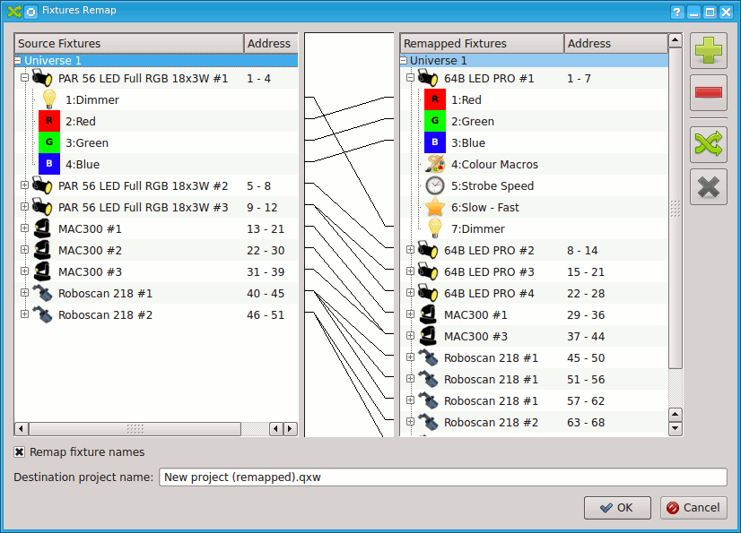

Starting from version 4.4.1, QLC+ offers a functionality called fixtures remapping.
When performing live shows in different venues, you may only be able to find out at the
last minute which fixtures are
installed there. Well, fixtures remapping helps you to use your
existing projects in this and many other situations, such as when you need to replace a
faulty fixture or when you want to use hired in equipment alongside your own.
For example, you can set up a project with just one PAR, one moving head and one scanner.
When reaching the venue where the show is going to take place, you can remap your fixtures
to those you find there, for example 50 PARs, 30 moving heads and 15 scanners.
With QLC+, it takes just a few minutes to do this operation !
Fixtures remapping allows you to perform 1-to-1 or 1-to-many reassignments of entire fixtures or single channels.
QLC+ will try as far as possible to reassign the original channels used in the project to new channels in the same category.
When you confirm the remapping operation, a new project will be automatically saved to preserve your original project.
All the fixtures, scenes, EFX, Virtual Console widgets and audio triggers found in the original project
will be remapped so that they work on the new fixtures list.
Let's now explain how to use the fixture remapping window, starting from a screenshot of
a complete example:

And now, here is a detailed explanation of each element of the remapping window.
| Source fixtures | On the left side of the window, there is a tree representing the universes, fixtures and channels used in your project. This list cannot be changed in this window. |
| Remapped fixtures | On the right side of the window, there is a tree representing the universes, fixtures and channels where you are going to remap your source fixtures. |
 |
Add one or more fixtures to the Remapped fixtures list. Clicking this button will open the Add/Edit Fixtures window. Please note that once a fixture is added, it cannot be modified, so if you need specific names or quantity, remember to do it before adding the new fixtures |
 |
Remove the selected Fixture from the remapped fixtures list. |
 |
This is probably the most important button in the window. It allows you to
determine the connection between a source ficture and a remapped fixture.
The connections can be performed either between single channels or on whole fixtures. In the first case you will need to select the source channel from the source fixtures list and a target channel from the remapped fixtures list. In the second case you will need to select a fixture from the source fixtures list and a target fixture from the remapped fixtures list. Wrong selections will cause an error message to popup. For example you cannot remap a channel to a fixture and vice-versa. If the connection is valid, it will be represented as a line in the white area between the source list and the remapped list. |
 |
Remove a previously created remapping connection. Wrong selections will cause an error popup. |
| Remap fixtures names | If this is checked, a new remapping connection between fixtures will also set the target fixture name be the same as the source fixture name. |
| Destination project name | The absolute path and name of the remapped project. For convenience, QLC+ will automatically take the original project name and will add "(remapped)" at the end of it. |